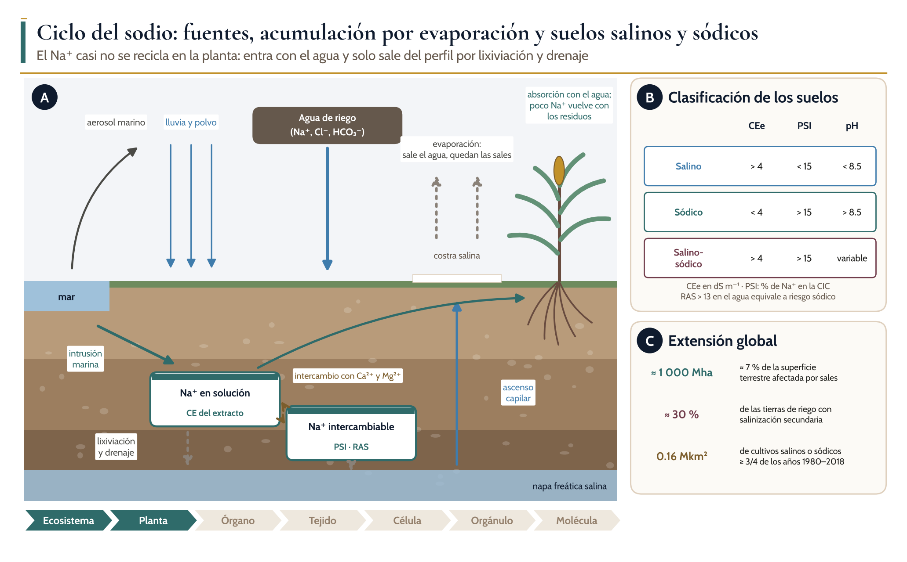
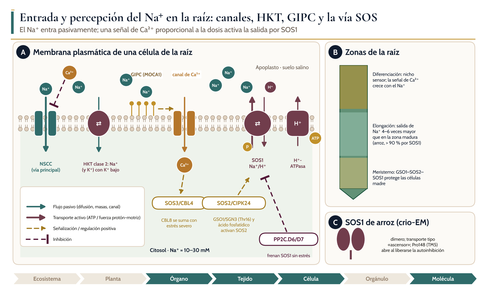
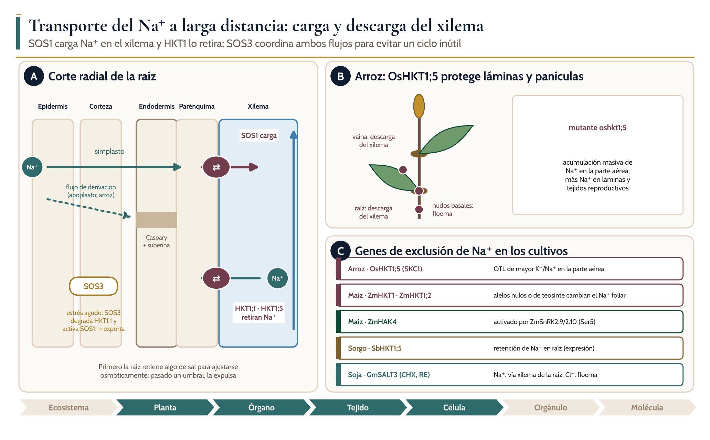
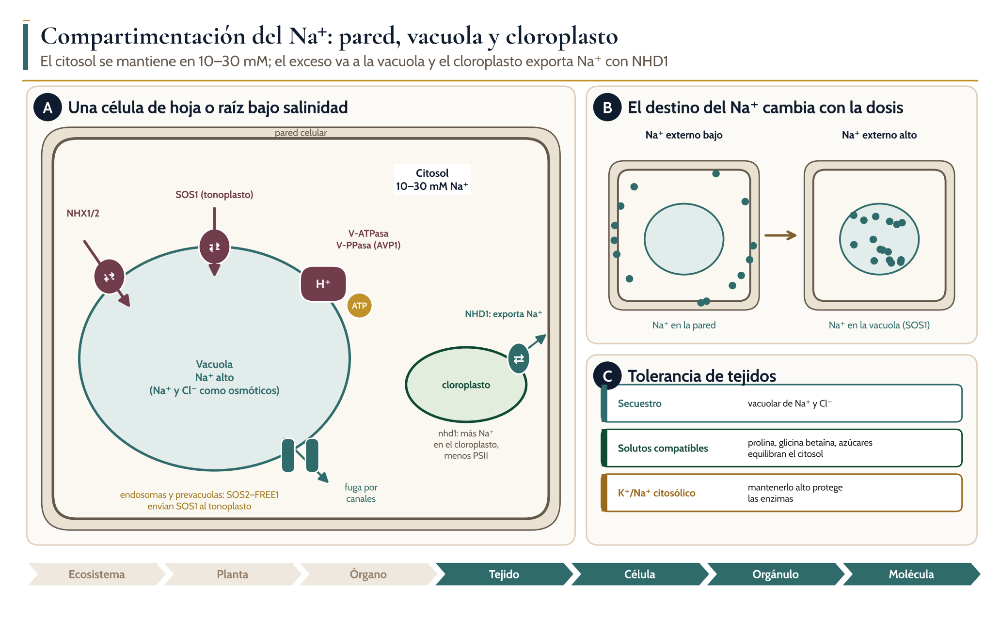
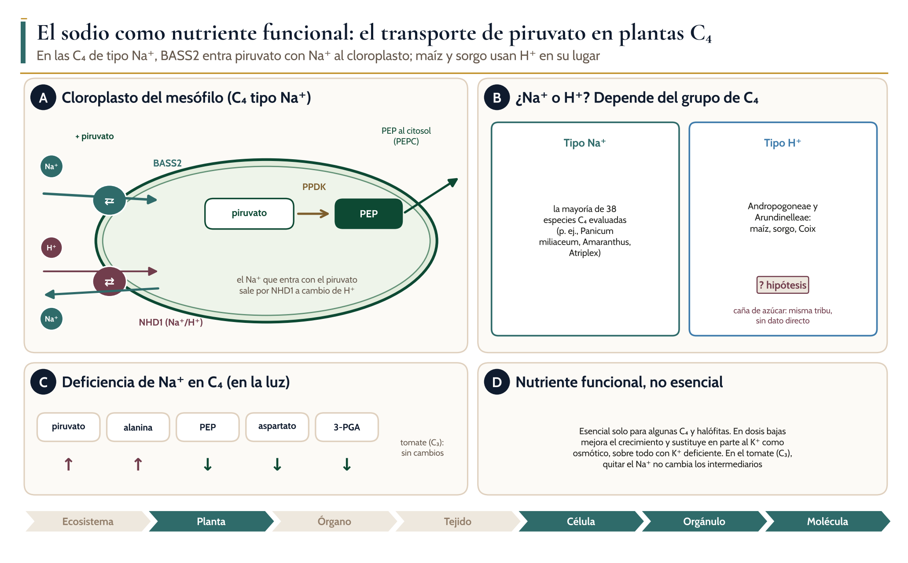
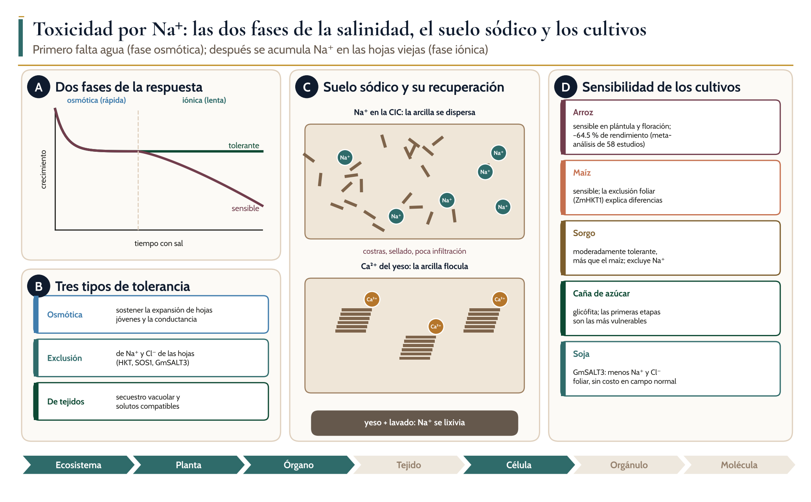

Ciclos biogeoquímicos, absorción, transporte, distribución y homeostasis del agua y los nutrientes en las plantas
Na
Módulo 6. Sodio
Dr. Juan Patishtan Pérez Licenciatura avanzada, maestría y doctorado · Agosto–diciembre 2026

Introducción
Objetivos de aprendizaje
El sodio ocupa un lugar ambiguo en la nutrición vegetal. No cumple el criterio clásico de esencialidad para la mayoría de las plantas, pero es esencial para algunas especies C₄ y halófitas, mejora el crecimiento de muchas otras en dosis bajas y puede sustituir en parte al potasio como osmótico. Por eso se ha propuesto clasificarlo como «nutriente funcional»: un elemento que aumenta la biomasa o reduce el nivel crítico de un nutriente esencial sin ser indispensable para completar el ciclo de vida (Subbarao et al., 2003).
1Distinguir suelos salinos, sódicos y salino-sódicos con la CE del extracto de saturación, el PSI y el pH, y explicar cómo se forman.
2Describir la entrada pasiva de Na⁺ por canales no selectivos y transportadores HKT, y su percepción por los esfingolípidos GIPC.
3Explicar la vía SOS (SOS3/CBL4–SOS2/CIPK24–SOS1) y su ajuste a la intensidad del estrés.
4Analizar la carga y descarga del xilema (SOS1 frente a HKT1) y el papel de OsHKT1;5, ZmHKT1 y GmSALT3 en los cultivos.
5Integrar la compartimentación en pared, vacuola y cloroplasto con la tolerancia de tejidos.
6Explicar por qué el Na⁺ es un nutriente funcional en las C₄ de tipo Na⁺ y no en maíz o sorgo.
7Proponer estrategias de manejo de suelos y cultivos frente a la salinidad y la sodicidad.
6.1 Ciclo biogeoquímico del sodio
Ciclo del sodio en un agroecosistema
Ael Na⁺ entra con los aerosoles marinos, la lluvia, la intrusión marina, el agua de riego y el ascenso capilar desde la napa; la evaporación concentra las sales en la superficie y forma costras; el Na⁺ en solución intercambia con el Ca²⁺ y el Mg²⁺ de la CIC, y solo sale del perfil por lixiviación y drenaje.
Bcriterios de clasificación de los suelos afectados por sales.
Cextensión global de los suelos afectados.
6.1 Ciclo biogeoquímico del sodio
Suelos afectados por sales: diagnóstico y recuperación
Tipo
CEe (dS m⁻¹)
PSI
pH típico
Problema principal
Recuperación
Salino
> 4
< 15
< 8.5
Estrés osmótico; toxicidad de Na⁺ y Cl⁻
Lavado con drenaje
Sódico
< 4
> 15
> 8.5
Dispersión de arcillas, costras, poca infiltración
Enmienda cálcica (yeso) y lavado
Salino-sódico
> 4
> 15
Variable
Ambos; se dispersa al lavar sin enmienda
Enmienda antes o durante el lavado
6.1 Ciclo biogeoquímico del sodio
● Mecanismo establecido
Concepto clave: salinidad y sodicidad son problemas distintos
1
La salinidad daña sobre todo a la planta: reduce el potencial osmótico del suelo y causa toxicidad iónica.
2
La sodicidad daña sobre todo al suelo: el Na⁺ en la CIC dispersa las arcillas, provoca hinchamiento, sellado y costras, y reduce la infiltración y la aireación (Qadir et al., 2007).
3
Lavar un suelo sódico sin enmienda empeora la estructura, porque al bajar la concentración salina la dispersión aumenta.
6.2 Absorción y percepción del sodio
Entrada y percepción del Na⁺

Aen la membrana plasmática de la raíz, el Na⁺ entra por canales no selectivos (vía principal, inhibida por el Ca²⁺ externo) y por HKT de clase 2; su unión a los esfingolípidos GIPC (sintetizados por MOCA1) abre canales de Ca²⁺; el Ca²⁺ activa SOS3/CBL4 (y CBL8 con estrés severo), que recluta a la quinasa SOS2/CIPK24; SOS2 fosforila a SOS1, que expulsa Na⁺ con la energía del gradiente de H⁺ de la H⁺-ATPasa; las fosfatasas PP2C.D6/D7 frenan SOS1 sin estrés.
Bfunciones de las zonas de la raíz.
Cestructura de SOS1 de arroz.
6.2 Absorción y percepción del sodio
? Hipótesis o debate
¿Cuánto Na⁺ expulsa realmente SOS1 en el arroz?
1
En el arroz, el mutante sos1 es extraordinariamente sensible a la sal: absorbe Na⁺ en exceso y carga menos Na⁺ en el xilema. SOS1 es el único transportador de salida de Na⁺ caracterizado genéticamente (Elmahi et al., 2019).
2
La salida de Na⁺ es 4–6 veces mayor en la zona de elongación que en la zona madura, y más de 90 % es sensible a la amilorida, lo que indica actividad de SOS1 (Shahzad et al., 2022).
3
Pero la anatomía del arroz permite un flujo de derivación por el apoplasto, y la contribución real de la expulsión frente a la retención sigue en discusión (Shahzad et al., 2022).
6.3 Transporte a corta y larga distancia
Transporte del Na⁺ a larga distancia

Acorte radial de raíz; el Na⁺ cruza la corteza por el simplasto y, en el arroz, también por un flujo de derivación apoplástico; en el parénquima, SOS1 carga Na⁺ en el xilema y HKT1;1 u HKT1;5 lo retiran; con estrés agudo, SOS3 degrada HKT1;1 y activa SOS1.
Ben el arroz, OsHKT1;5 descarga Na⁺ del xilema en la raíz y las vainas y actúa en el floema de los nudos basales.
Cgenes de exclusión de Na⁺ en los cultivos de referencia.
6.3 Transporte a corta y larga distancia
Proteínas que controlan la entrada, la salida y la distribución del Na⁺
Proteína
Tipo y función
Localización
Evidencia en cultivos
NSCC (CNGC, GLR)
Canales; vía principal de entrada de Na⁺
Membrana plasmática
Inferida en varias especies
HKT clase 2
Transporte de Na⁺ (y K⁺) de alta afinidad
Membrana plasmática de la raíz
Arroz
SOS1 (NHX7)
Antiportador Na⁺/H⁺; salida de Na⁺ y carga del xilema
Membrana plasmática y tonoplasto
Arroz (sos1 muy sensible); sorgo y caña (expresión)
SOS2/CIPK24 – SOS3/CBL4
Quinasa y sensor de Ca²⁺ que activan SOS1
Citosol y membrana
Conservados en gramíneas
HKT1;1 / HKT1;5
Descarga de Na⁺ del xilema
Parénquima del xilema; floema de nudos
OsHKT1;5 (SKC1), ZmHKT1, ZmHKT1;2, SbHKT1;5
ZmHAK4
Transportador de Na⁺; exclusión de la parte aérea
Raíz
Maíz
GmSALT3
Intercambiador CHX
Retículo endoplásmico de la raíz
Soja
NHX1/2
Antiportadores Na⁺,K⁺/H⁺
Tonoplasto
Generales
NHD1 / BASS2
Antiportador Na⁺/H⁺ / simportador Na⁺-piruvato
Envoltura del cloroplasto
C₄ de tipo Na⁺
6.4 Distribución, compartimentación y homeostasis
Compartimentación del Na⁺

Aen la célula bajo salinidad, el citosol se mantiene en 10–30 mM; la vacuola acumula Na⁺ y Cl⁻ como osmóticos mediante antiportadores (NHX1/2 y SOS1 en el tonoplasto, dirigido por SOS2–FREE1) energizados por la V-ATPasa y la V-PPasa; parte del Na⁺ vuelve al citosol por canales; el cloroplasto exporta Na⁺ por NHD1.
Bcon Na⁺ externo bajo, el Na⁺ se acumula en la pared; con Na⁺ alto, en la vacuola.
Ccomponentes de la tolerancia de tejidos.
6.4 Distribución, compartimentación y homeostasis
Distribución y control del Na⁺ en cada nivel de organización
Nivel
Dónde se distribuye el Na⁺
Mecanismo de control
Ejemplo en cultivos
Ecosistema
Solución y CIC del suelo; napa
Riego, drenaje, evaporación, enmiendas
Distritos de riego; deltas arroceros
Planta
Raíz > vaina > lámina > grano
Exclusión radical, descarga del xilema, floema
Arroz (OsHKT1;5), soja (GmSALT3)
Órgano
Hojas viejas antes que jóvenes
Senescencia de hojas viejas en la fase iónica
Todos los cereales
Tejido
Raíz: zona de diferenciación y meristemo
Nicho sensor; GSO1–SOS2–SOS1; barreras
Arroz (flujo de derivación)
Célula
Pared (Na⁺ bajo) o vacuola (Na⁺ alto)
SOS1, NHX, bombas de H⁺
Arabidopsis y arroz
Orgánulo
Cloroplasto, endosomas, prevacuolas
NHD1, BASS2, tráfico de SOS1
C₄ de tipo Na⁺
6.5 Funciones del sodio: un nutriente funcional
El sodio como nutriente funcional

Aen el cloroplasto del mesófilo de las C₄ de tipo Na⁺, BASS2 introduce piruvato con Na⁺, NHD1 devuelve el Na⁺ al citosol a cambio de H⁺, y la PPDK forma PEP, que sale al citosol para la PEP carboxilasa.
Bla mayoría de las C₄ evaluadas son de tipo Na⁺, mientras que las Andropogoneae (maíz, sorgo) y Arundinelleae son de tipo H⁺.
Ccambios en los intermediarios C₄ con deficiencia de Na⁺.
Del concepto de nutriente funcional.
6.5 Funciones del sodio: un nutriente funcional
? Hipótesis o debate
Hipótesis: ¿la caña de azúcar es de tipo H⁺?
1
La caña de azúcar (Saccharum) pertenece a la tribu Andropogoneae, la misma del maíz y el sorgo, que son de tipo H⁺ (Aoki et al., 1992).
2
Por parentesco es razonable esperar que también lo sea, pero no encontramos una medición directa en Saccharum. Es una inferencia filogenética, no un resultado.
3
Consecuencia práctica: no hay base para esperar respuestas al Na⁺ como nutriente en la caña, y sí para tratarla como glicófita sensible a la sal.
6.5 Funciones del sodio: un nutriente funcional
Funciones del sodio y su importancia
Función
Proceso
Especies
Importancia agronómica
Cotransporte de piruvato
BASS2 (Na⁺-piruvato) y NHD1 en el cloroplasto
C₄ de tipo Na⁺ (Amaranthus, Atriplex, Panicum)
Esencial en esas especies
Osmótico vacuolar
Sustituye en parte al K⁺
Muchas especies; halófitas
Reduce el requerimiento de K
Catión acompañante
Balance de cargas
Halófitas y algunas glicófitas
Limitada en los cultivos de referencia
Señal de estrés
Activa GIPC, Ca²⁺ y SOS
Todas
Base de la tolerancia a la sal
6.6 Deficiencia, exceso y toxicidad
Toxicidad por Na⁺

Amodelo de dos fases; la fase osmótica afecta por igual a genotipos tolerantes y sensibles, y la fase iónica los separa.
Blos tres tipos de tolerancia.
Cen el suelo sódico, el Na⁺ de la CIC dispersa las arcillas y forma costras; el Ca²⁺ del yeso desplaza al Na⁺, la arcilla flocula y el lavado elimina el Na⁺.
Dsensibilidad de los cultivos de referencia.
6.6 Deficiencia, exceso y toxicidad
? Hipótesis o debate
Debate: ¿la exclusión foliar de Na⁺ predice la tolerancia?
1
La exclusión foliar de Na⁺ se considera un subrasgo clave, y los HKT1 son sus principales controladores (Hauser y Horie, 2010).
2
Pero la exclusión foliar no siempre se correlaciona con la tolerancia: algunas plantas acumulan Na⁺ en las hojas sin perder rendimiento, siempre que HKT1 lo excluya de los tejidos reproductivos (Garcia-Daga et al., 2024).
3
En la soja, GmSALT3 reduce el Na⁺ foliar, pero lo que más pesa en el campo podría ser la exclusión de Cl⁻, que ocurre antes (Liu et al., 2016).
6.6 Deficiencia, exceso y toxicidad
Contraste entre los efectos de la salinidad y de la sodicidad
Aspecto
Salinidad
Sodicidad
Causa
Sales solubles (CEe alta)
Na⁺ intercambiable (PSI alto)
Efecto en el suelo
Escaso; la estructura se mantiene
Dispersión de arcillas, costras, baja infiltración
Efecto en la planta
Estrés osmótico y toxicidad de Na⁺ y Cl⁻
Hipoxia, encharcamiento, pH alto, deficiencias de micronutrientes
Síntomas
Menor crecimiento; necrosis de bordes en hojas viejas
Emergencia pobre; raíces superficiales; clorosis
Corrección
Lavado con drenaje
Yeso u otra fuente de Ca²⁺ y lavado
6.7 Respuestas adaptativas y regulación
? Hipótesis o debate
Debate: ¿expulsar o secuestrar?
1
El modelo clásico atribuye a SOS1 la expulsión de Na⁺ de la raíz al suelo (Shi et al., 2000).
2
Las imágenes de cryo-NanoSIMS indican que, en el meristemo, SOS1 sirve sobre todo para secuestrar Na⁺ en las vacuolas (Ramakrishna et al., 2025).
3
La salida neta de Na⁺ de una raíz entera en un suelo salino también tiene un costo energético alto, y parte del Na⁺ expulsado puede volver a entrar. El equilibrio entre expulsión y secuestro probablemente depende del tejido y de la dosis (Tyerman et al., 2026).
6.7 Respuestas adaptativas y regulación
Estrategias frente a la salinidad y la sodicidad
Estrategia
Rasgo
Mecanismo
Evidencia
Exclusión radical
Menos Na⁺ en el xilema
SOS1, HKT1;5, barreras de Caspary y suberina
Arroz, maíz, sorgo
Protección reproductiva
Sin Na⁺ en espigas y panículas
HKT1 en nudos y floema
Arroz (OsHKT1;5)
Exclusión de Cl⁻
Menos Cl⁻ en las láminas
Recirculación por el floema; retención en vainas
Soja (GmSALT3), sorgo dulce
Secuestro vacuolar
Na⁺ y Cl⁻ como osmóticos
SOS1 y NHX en el tonoplasto, bombas de H⁺
Arabidopsis, arroz
Ajuste osmótico
Solutos compatibles
Prolina, glicina betaína, azúcares
Sorgo, caña de azúcar
Nutrición
Más K⁺/Na⁺
NH₄⁺ en sorgo; Ca²⁺ externo
Sorgo; general
6.8 Implicaciones agronómicas
Comparación de los cinco cultivos de referencia frente al sodio
Cultivo
Tolerancia
Etapa crítica
Mecanismo o gen clave
Manejo clave
Arroz
Sensible
Plántula y floración
OsHKT1;5 (SKC1), SOS1
Variedades con OsHKT1;5 (SKC1) tolerante; lámina de agua de buena calidad en floración
Maíz
Sensible
Plántula
ZmHKT1, ZmHKT1;2, ZmHAK4
Evitar agua salina; alelos de exclusión en mejoramiento
Sorgo
Moderada
Germinación y plántula
Exclusión de Na⁺ (SbHKT1;5)
Opción para suelos salinos moderados; lavado y riego suficiente
Caña de azúcar
Sensible (glicófita)
Brotación y establecimiento
Vía SOS (expresión)
Manejo del agua y del drenaje; cebado de esquejes
Soja
Sensible a moderada
Plántula a vegetativo
GmSALT3 (Na⁺ y Cl⁻)
Variedades con el alelo tolerante; marcadores moleculares
6.8 Implicaciones agronómicas
▲ Para el agrónomo
Para el agrónomo: cinco decisiones que dependen del sodio
1
1. Diagnóstico: medir CEe, PSI (o RAS) y pH antes de decidir; un suelo sódico no se corrige solo con agua.
2
2. Agua de riego: evaluar CE, RAS y carbonato sódico residual; un agua con RAS alta sodifica el suelo con los años.
3
3. Drenaje: sin una salida para el agua, el lavado sube la napa y vuelve a salinizar.
4
4. Enmiendas: yeso u otra fuente de Ca²⁺ en suelos sódicos, seguido de lavado; considerar mezclas y materia orgánica.
5
5. Variedades: elegir genotipos que excluyan Na⁺ y Cl⁻ de los tejidos reproductivos, y evaluar la tolerancia en la etapa crítica de cada cultivo.
Cierre
Síntesis
01
El Na⁺ casi no se recicla en la planta: entra con el agua, se concentra por evaporación y solo sale del perfil por lixiviación y drenaje.
02
Salinidad (CEe > 4 dS m⁻¹) y sodicidad (PSI > 15) son problemas distintos: la primera daña sobre todo a la planta y la segunda al suelo.
03
El Na⁺ entra por NSCC; los GIPC lo perciben y generan una señal de Ca²⁺ proporcional a la dosis que activa SOS3/CBL8–SOS2–SOS1.
04
SOS1 carga Na⁺ en el xilema y HKT1 lo retira; SOS3 coordina ambos. OsHKT1;5, ZmHKT1 y GmSALT3 son genes clave de exclusión.
05
El citosol se mantiene en 10–30 mM; el exceso va a la pared (Na⁺ bajo) o a la vacuola (Na⁺ alto), y SOS1 también actúa en el tonoplasto.
06
El Na⁺ es esencial en las C₄ de tipo Na⁺ (BASS2–NHD1), pero no en el maíz ni en el sorgo, que usan H⁺ para transportar piruvato.
Autoevaluación
Preguntas de autoevaluación
1Un suelo tiene CEe de 2 dS m⁻¹, PSI de 22 y pH de 9.1. ¿Cómo lo clasifica? ¿Por qué lavarlo con agua de buena calidad sin enmienda empeoraría el problema?
2Explique cómo una planta puede distinguir 50 mM de 150 mM de NaCl. ¿Qué componentes moleculares intervienen?
3¿Qué fenotipo esperaría en un mutante sos3 con estrés sódico agudo, en cuanto a la proteína HKT1;1 y a la distribución de Na⁺ entre raíz y parte aérea?
4Un estudiante afirma que el maíz necesita Na⁺ porque es una planta C₄. Corrija la afirmación con evidencia.
5Diseñe un ensayo para evaluar la tolerancia a la sal del arroz que no se limite a la etapa de plántula. ¿Qué mediría y en qué tejidos?
Fuentes verificadas
69
referencias verificadas: artículos con DOI, consultados en bases bibliográficas, y libros de texto. La lista completa, con autores, año, revista y enlace, está en el manual del módulo.